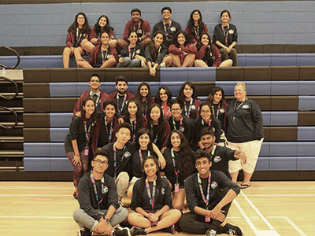
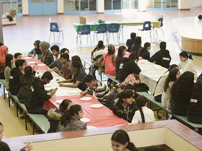
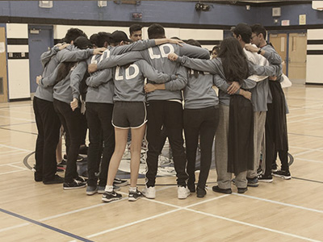
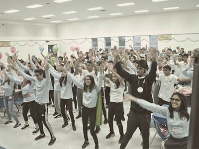
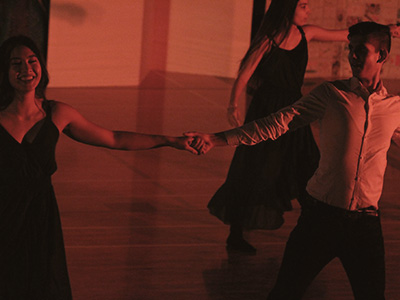
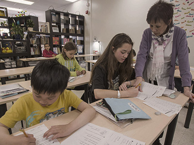

WORK EXPERIENCE
Hover over each image to learn more!

IBMC is a leadership conference held at Turner
Fenton Secondary School which aids incoming
grade 9 IB students in their transition to
high-school. I was responsible for planning the
conference vision and logistics, while
directing executive portfolio groups in
their respective tasks and conducting weekly
meetings to assess progress.
Chair of the International Baccalaureate Mentorship Conference

BMYC strives to provide youth with exposure
to different cultures and raise awareness of
cultural issues youth are facing in society.
As the head of technology and graphic
design for this non-profit organization, I was
responsible for creating posters and videos
for numerous promotional campaigns that relay
events, community partnerships, and
educational campaigns.
Graphic Designer at the Brampton Multicultural Youth Council

SOAR is an annual conference held at Turner
Fenton Secondary School for grade 7 and 8
students which aims to ease tensions
surrounding the transition to high-school
while instilling leadership skills in students.
As the director of technology, I was responsible
for developing the conference's website,
creating promotional videos targeting
middle-school students, and managing
equipment on the day of the event.
Director of Web/Technology at Suddenly Opportunities are Reachable

START is a Peel-wide student-run conference
held annually at Turner Fenton Secondary
School, where two-hundred student delegates
develop their leadership skills through
a range of group activities. As the director
of technology, I created the conference's website,
posters for recruitment and sponsorship,
and logos corresponding the conference's theme.
Head of Web/Technology at Students the Active Risk Takers

Culturefest is the largest student-run event
in Peel, in which students choreograph
and perform dances to the community over two
days. As the head of technology for the
event; I created the event website while
developing visual components including posters
promoting the event to potential attendees,
and a sponsorship package to garner financial
support from the local community.
Head of Web/Technology at Culturefest

As a data handler and teacher at Kumon,
my responsibilities included recording
the performance data of math and reading
students on a computer system and determining
next steps based on their current level of
proficiency. In addition, I was responsible for
evaluating student work and working with
students one-on-one to address learning
difficulties.
Teacher and Data Handler at Kumon Math and Reading Centre